Project 2: Fun with Filters and Frequencies
Part 1.1: Convolutions from Scratch
I implemented 2D convolution using NumPy in two ways: a direct version with four loops and a version with two loops that uses NumPy to compute each window's weighted sum. Both implementations flip the filter and use zero padding. The results below use a 480×640 grayscale working copy of my photograph.
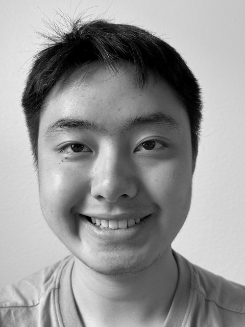
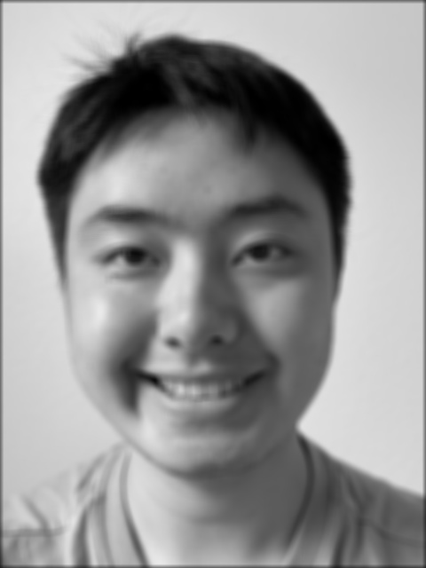
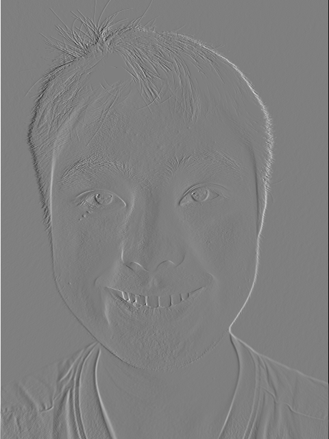
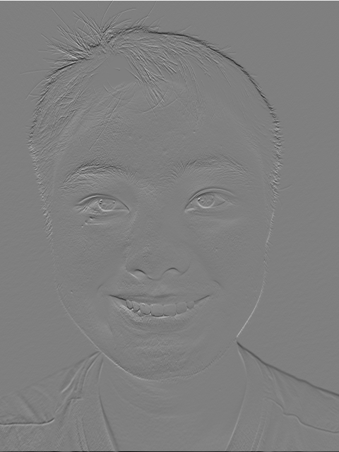
Implementation
A shared helper flips the kernel and pads the image. The four-loop version computes each product explicitly:
for y in range(output_height):
for x in range(output_width):
pixel_value = 0
for kernel_y in range(kernel_height):
for kernel_x in range(kernel_width):
pixel_value += (
padded_image[y + kernel_y, x + kernel_x]
* flipped_kernel[kernel_y, kernel_x]
)
output[y, x] = pixel_valueThe two-loop version delegates the inner calculation to NumPy:
for y in range(output_height):
for x in range(output_width):
window = padded_image[
y:y + kernel_height,
x:x + kernel_width,
]
output[y, x] = np.sum(window * flipped_kernel)Comparison
| Implementation | Time | Matches SciPy |
|---|---|---|
| Four loops | 3.317 s | Yes |
| Two loops | 0.379 s | Yes |
scipy.signal.convolve2d |
0.019 s | Reference |
The two-loop version was about 8.8× faster than the four-loop version, while SciPy was about 19× faster than the two-loop version. Both custom outputs matched SciPy within floating-point precision; their largest absolute errors were below 3×10−13.
For boundaries, I used zero-filled “same” padding so the output keeps the input dimensions. This assumes pixels beyond the photograph are black, which causes the thin dark frame visible in the blurred result.
Part 1.2: Finite Difference Operator
I convolved the cameraman image with Dx and Dy, then computed the gradient magnitude as √(Dx2 + Dy2).

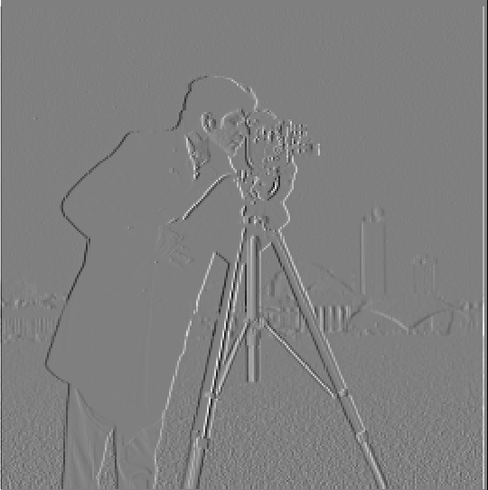
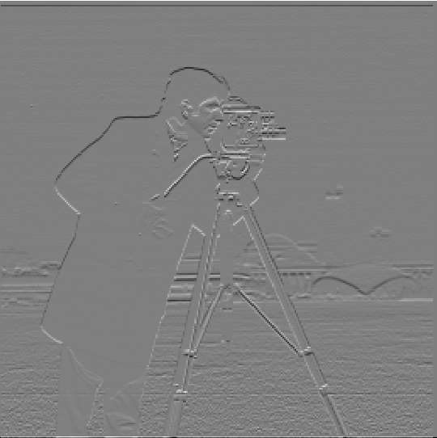
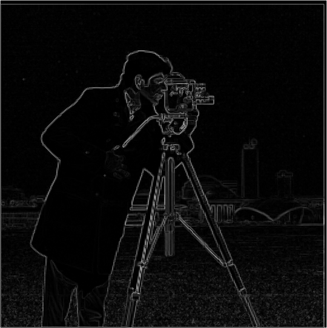
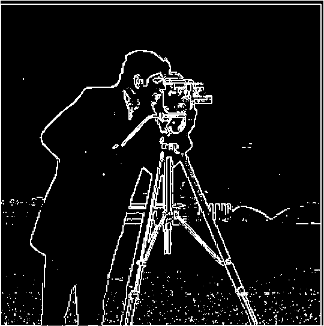
I chose a threshold of 50. It preserves the important outlines of the person, camera, tripod, and buildings while removing most weak changes in the sky and clothing. A lower threshold retained more detail but also much more grass and image noise; a higher threshold began removing real, lower-contrast edges. Some grass texture remains at this threshold as the tradeoff for keeping those weaker object boundaries.
Part 1.3: Derivative of Gaussian Filter
I formed a 9×9 Gaussian filter with σ = 2 using
cv2.getGaussianKernel and an outer product. I first blurred
the cameraman image, then applied Dx and Dy to the
blurred result.
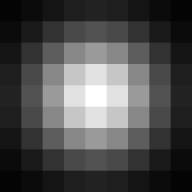
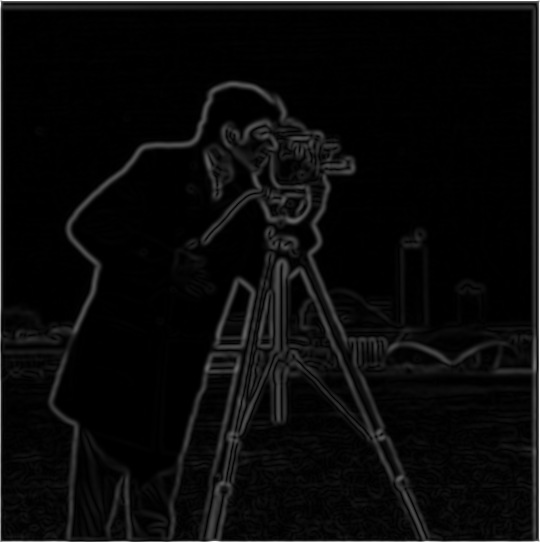
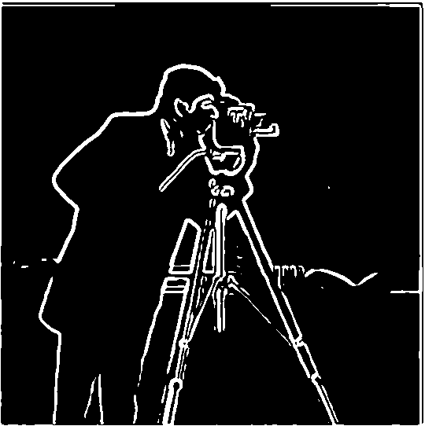
Compared with the finite-difference result in Part 1.2, Gaussian smoothing removes many high-frequency responses in the grass and other textured regions. The remaining boundaries are cleaner and slightly thicker. I lowered the threshold from 50 to 30 because smoothing also reduces the gradient magnitudes.
Derivative-of-Gaussian filters
I convolved the Gaussian with Dx and Dy to create two derivative-of-Gaussian filters. Each one combines smoothing and differentiation into a single convolution.
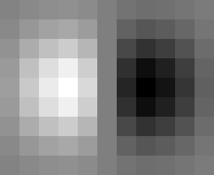
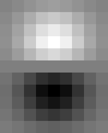
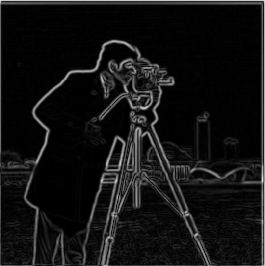
Away from the padded boundary, the two-pass and single-pass derivatives agree to floating-point precision: their maximum difference is below 2×10−13. The border can differ because the two-pass version crops to “same” size between its two convolutions.
Part 2.1: Image Sharpening
I blurred each image with the 9×9 Gaussian filter from Part 1.3 and
extracted its high frequencies as H = I − G * I. The
sharpened image is I + αH. I combined those steps into one
convolution using the unsharp-mask filter
(1 + α)δ − αG.
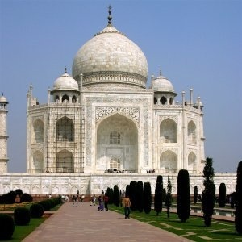
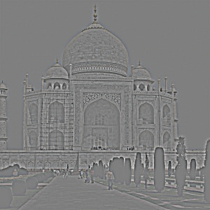
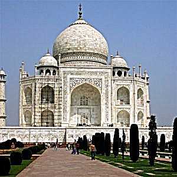
Increasing α makes the dome, arches, and facade patterns more distinct. The α = 0.5 result is subtle, α = 1 is stronger, and α = 2 begins to show harsher contrast and slight halos. Sharpening emphasizes existing high frequencies; it does not create genuinely new detail.
Blur and resharpen evaluation
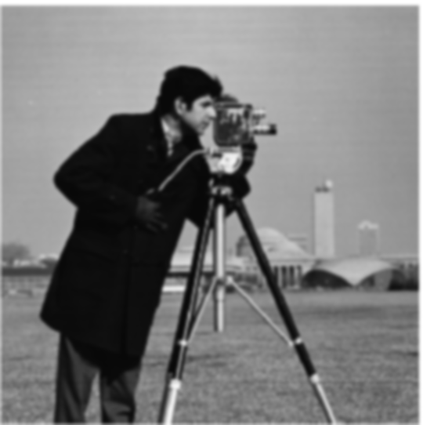
Resharpening restores much of the edge contrast around the subject, camera, and tripod, but the result remains less detailed than the original and develops visible halos. Once blurring removes high-frequency information, unsharp masking can amplify what remains but cannot perfectly reconstruct what was lost.
Part 2.2: Hybrid Images
A hybrid image combines the low frequencies of one image with the high frequencies of another. Up close, the fine detail of the high-frequency image dominates. From farther away, or when the image is shrunk, that detail becomes too small to see, and the smooth shapes of the low-frequency image take over.
For each pair, I picked the eye centers by hand and used a similarity transform (scale, rotation, translation) to map the low-frequency image onto the high-frequency image's frame. Aligning into the high-frequency frame means the fine details are never resampled. The low-pass result is a Gaussian blur with standard deviation σlow. The high-pass result is the image minus its own Gaussian blur with σhigh (an impulse minus a Gaussian). The hybrid is their sum.
To turn σ into a cutoff frequency: a Gaussian with spatial standard deviation σ has frequency response exp(−2π²σ²f²), which drops to one half at fc = √(ln 2 / 2) / (πσ) ≈ 0.187 / σ cycles per pixel. The matching high-pass filter rises to one half at the same frequency. I report each cutoff both as fc and as its period 1/fc in pixels, which is easier to compare against features such as the distance between the eyes.
Favorite result: selfie and Einstein
Einstein supplies the low frequencies and my selfie supplies the high frequencies. Both images are aligned into the 675 × 900 selfie frame, where my eyes are 200 px apart.
| Component | σ | Cutoff fc | Period 1/fc |
|---|---|---|---|
| Einstein, low-pass | 10 px | 0.019 cycles/px | ≈ 53 px |
| Selfie, high-pass | 4 px | 0.047 cycles/px | ≈ 21 px |
Why these cutoffs: The low-pass filter keeps only structure larger than about a quarter of the eye spacing: Einstein's head outline, the white mass of his hair, his eye sockets, and the dark sweater. It removes his wrinkles and individual hairs. The high-pass filter keeps only detail smaller than about 21 px: my eyelids, teeth, hairline, and the edge of my face. Because the low-pass cutoff (0.019 cycles/px) is well below the high-pass cutoff (0.047 cycles/px), the band between them comes from neither image. That gap keeps the two faces from competing at middle frequencies, which would otherwise make the result look like a double exposure at every viewing distance.
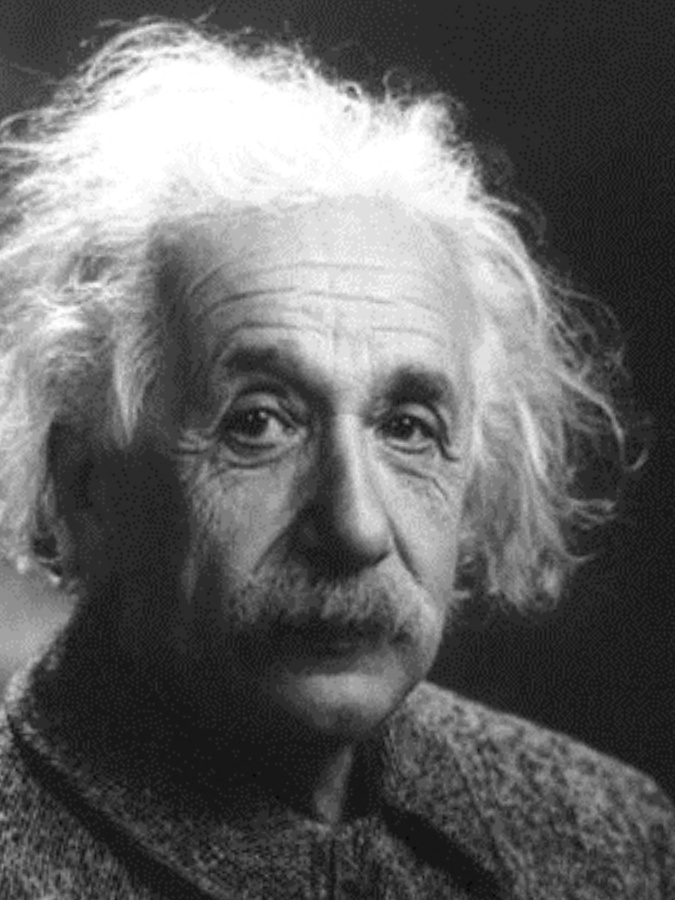
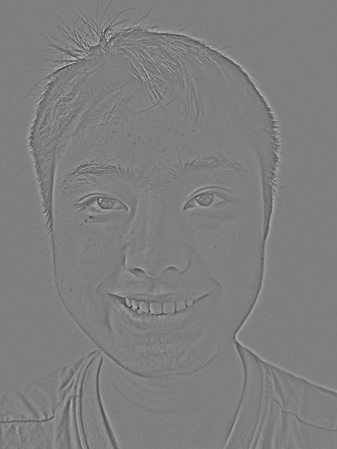
Frequency analysis
Each panel shows the log magnitude of the 2D Fourier transform, log|FFT|, with the zero frequency at the center. Before each transform I subtracted the image mean and multiplied by a Hann window. Without the window, the jump at the image borders adds a bright horizontal and vertical cross that hides the actual content. All five panels share one brightness scale, so they can be compared directly.
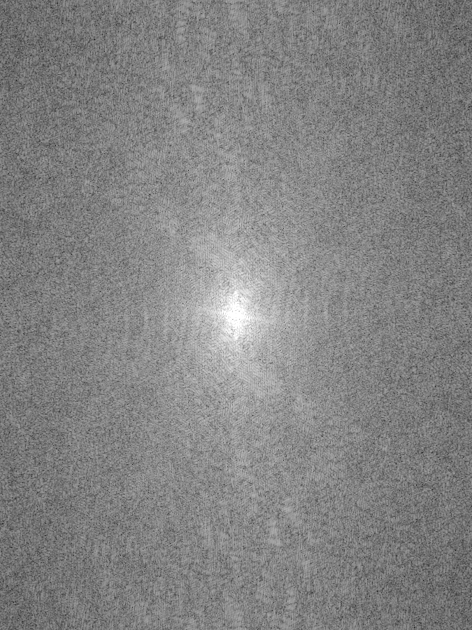
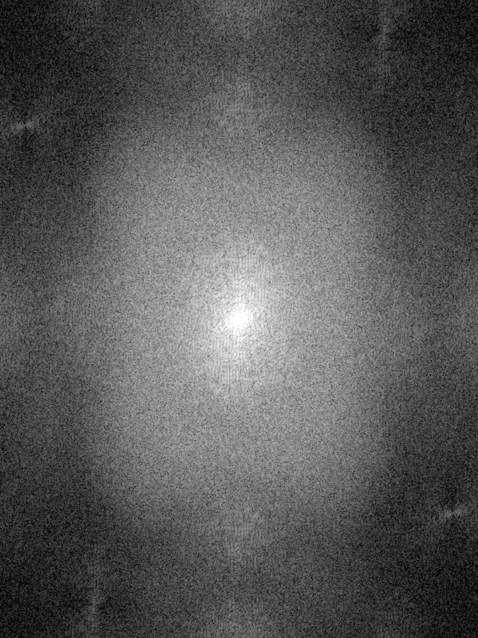
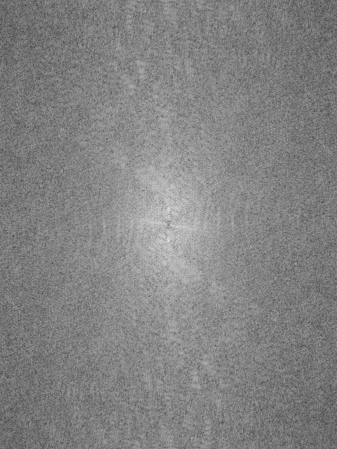
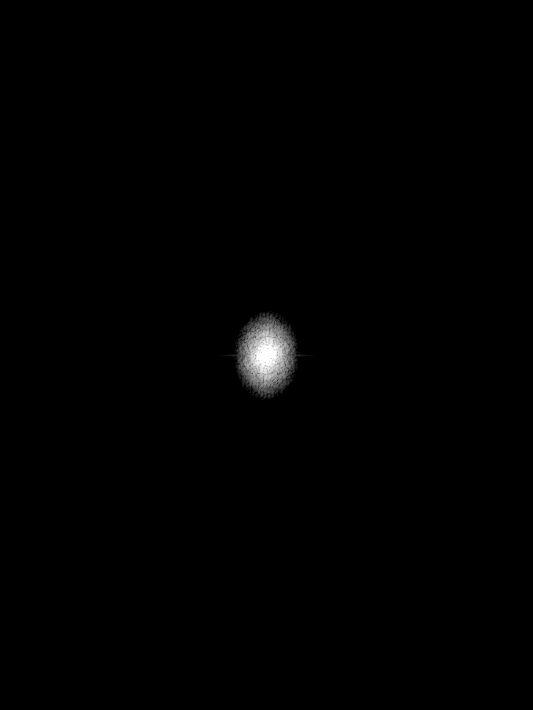
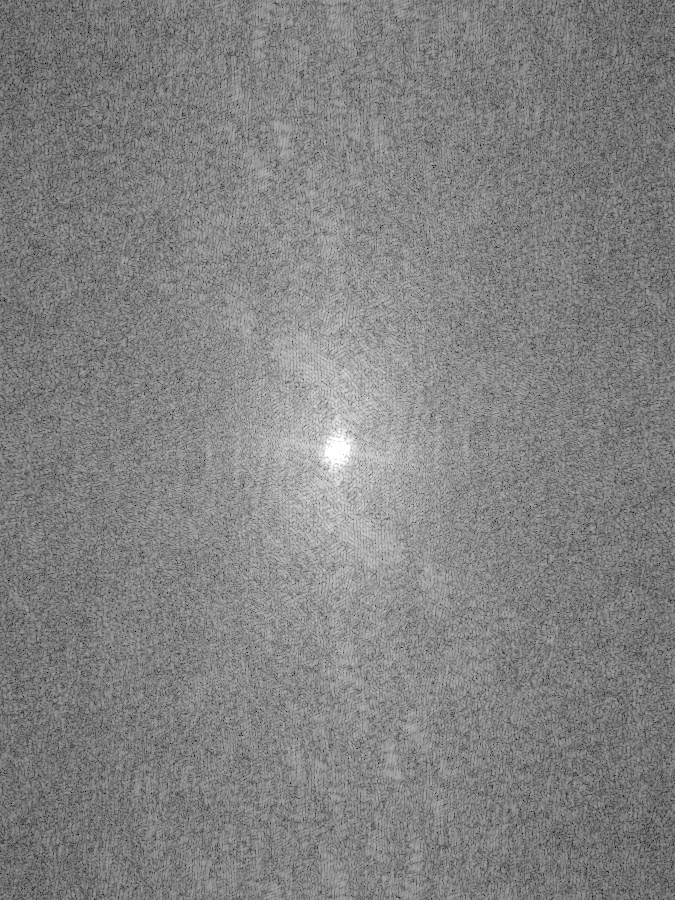
The low-pass filter leaves only a small disk around the center: every frequency above the cutoff is gone. The high-pass filter does the opposite. It removes the bright center of the selfie's spectrum and leaves the outer region unchanged. The hybrid's spectrum is the sum of these two: Einstein's disk at the center, surrounded by the selfie's high frequencies.
Choosing σ: comparison
To check the cutoffs, I changed one σ at a time from the chosen values (σlow = 10, σhigh = 4) and looked at each result at several sizes.
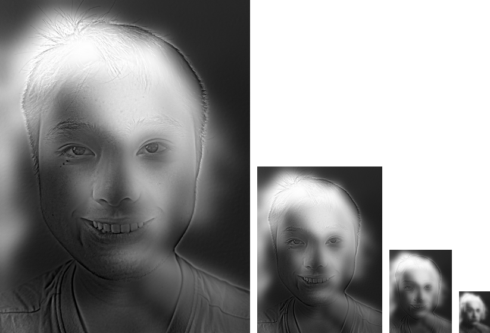
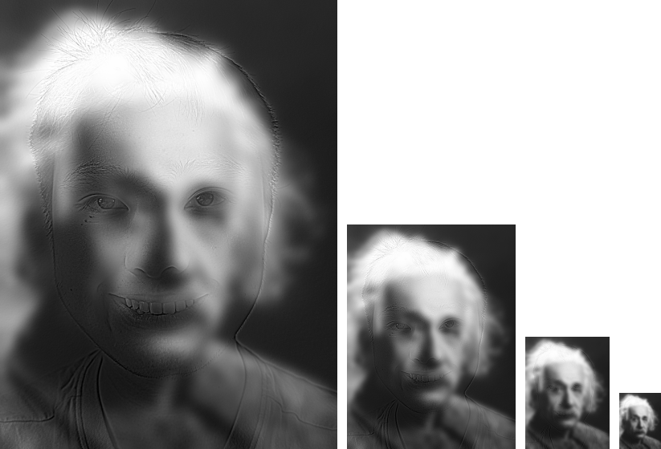
Derek and Nutmeg
Nutmeg supplies the low frequencies (σ = 10, period ≈ 53 px) and Derek supplies the high frequencies (σ = 4, period ≈ 21 px), in Derek's 732 × 1024 frame where his eyes are about 139 px apart.
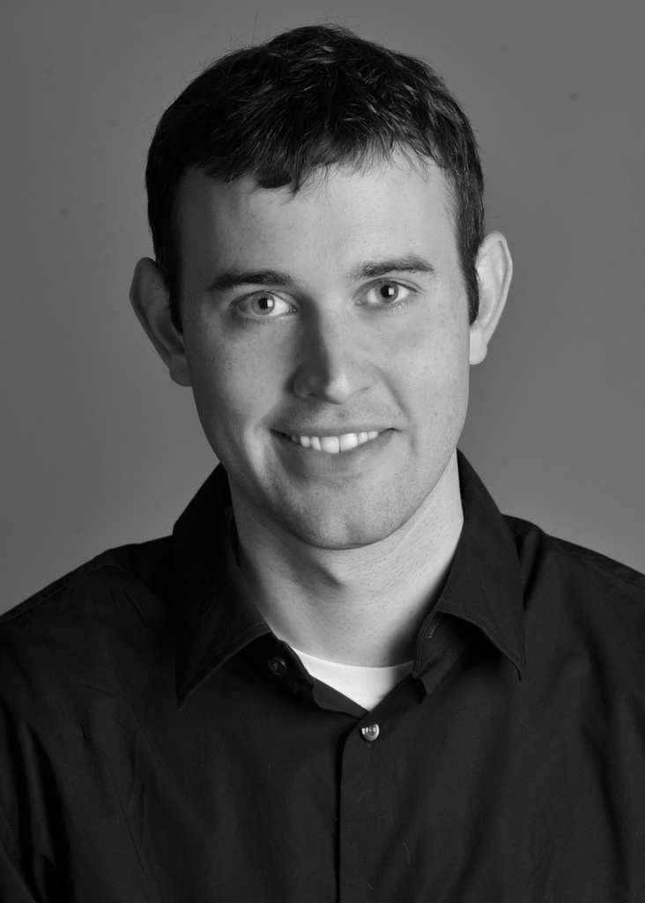
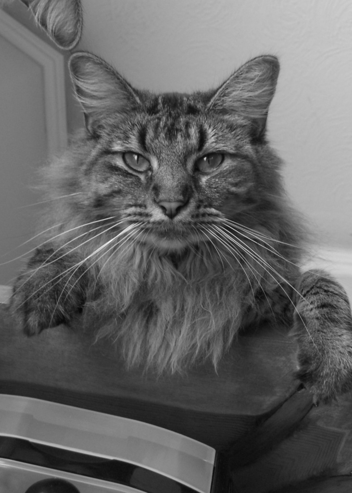
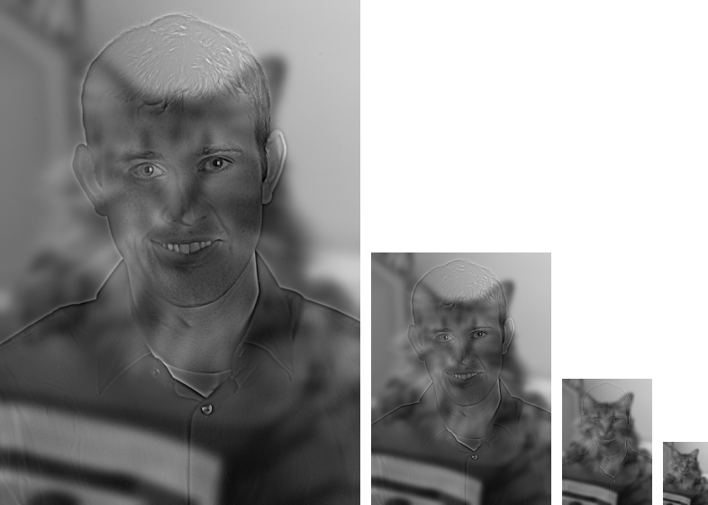
Derek and Einstein
For this pair, Einstein supplies the high frequencies. His portrait has a lot of fine texture (wrinkles, wild hair, a knit sweater), so up close it overpowers the smooth studio lighting of Derek's photo. Derek supplies the low frequencies, and his dark hair and shirt give a strong silhouette that is easy to read from far away. Both faces are front-on, so once the eyes are aligned the head outlines roughly line up. Derek is aligned into Einstein's native 450 × 449 frame, where the eyes are 84 px apart instead of 200 px, so smaller σ values are needed. After trying a few values and checking each at several sizes, I used σlow = 6 (period ≈ 32 px) and σhigh = 2 (period ≈ 11 px).
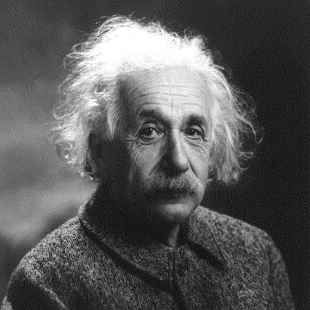
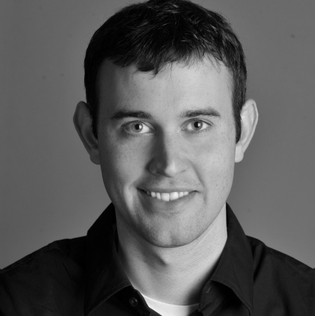
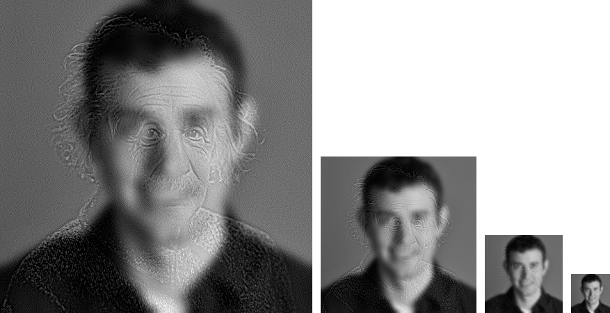
Image source: Albert Einstein portrait (public domain, Wikimedia Commons).

Part 2.3: Gaussian and Laplacian Stacks
A stack is like a pyramid, but without downsampling: every level keeps the full image size. I built both stacks from scratch, with no built-in pyramid functions.
- Gaussian stack: G0 is the image, and Gi+1 is Gi blurred by a Gaussian with σ = σ0 · 2i. Doubling σ at each step roughly doubles the total blur per level, which mimics halving the resolution in a pyramid. For the 300 × 300 apple and orange, σ0 = 2, so the total blur at levels 1–5 is about 2, 4.5, 9.2, 18 and 37 px.
- Laplacian stack: Li = Gi − Gi+1 for levels 0–4. Each band holds the detail that one extra blur removes. The last level is the blurriest Gaussian, L5 = G5. The sum telescopes, so adding up all six levels returns the original image exactly.
In the Laplacian images, mid-gray means zero. Each band gets its own contrast stretch, because the coarse bands are much stronger than the fine ones. The stretch is applied per color channel, which is why some coarse bands show false colors such as cyan and blue.
Apple
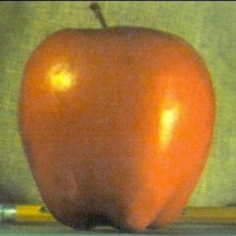
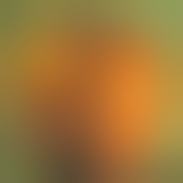
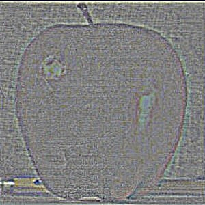
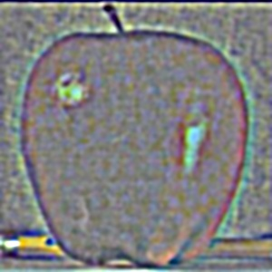
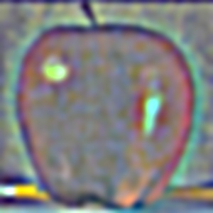
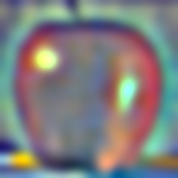
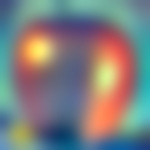

Orange
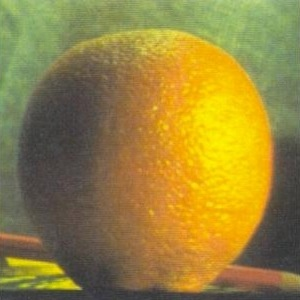
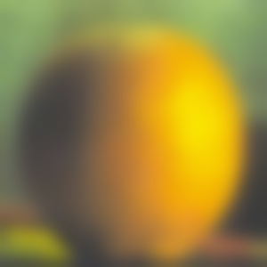
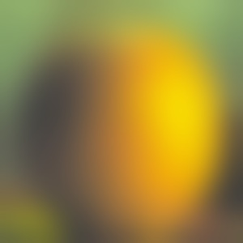
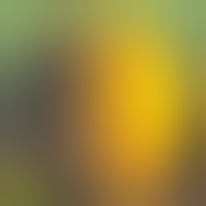
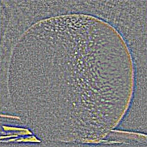
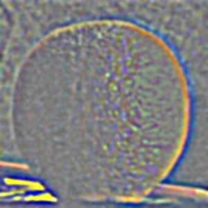
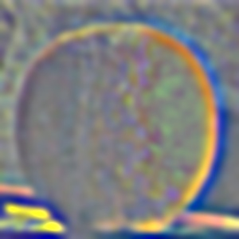
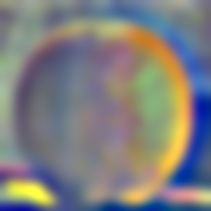
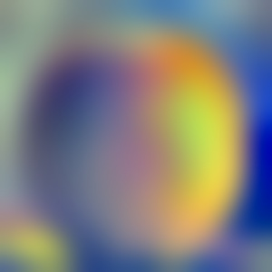

Recreating Szeliski Figure 3.42
Szeliski's figure shows the apple + orange blend broken down by level. The first three rows show Laplacian levels 0, 2 and 4: the apple's band weighted by the blurred mask, the orange's band weighted by one minus the mask, and their sum. The last row adds up all levels of each column. The fine levels (row 1) switch from apple to orange across a sharp seam. The coarse levels (row 3) switch across a wide, gradual seam. The three panels in each row share one contrast stretch, so the two masked bands and their sum can be compared directly.
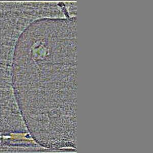

Part 2.4: Multiresolution Blending
Following Burt and Adelson (1983), I blend two images one frequency band at a time. I build Laplacian stacks LA and LB for the two images and a Gaussian stack GM for the mask, which is 1 where image A should appear. Each blended band is Li = GMi · LAi + (1 − GMi) · LBi, and the result is the sum of all blended bands. Blending is done separately in each color channel.
Fine details blend across a narrow seam, so textures don't overlap into ghosts. Overall color and brightness blend across a wide seam, so there's no sudden jump. A single blurred mask can only do one of these: sharp enough to avoid ghosting leaves a visible color step, and soft enough to hide the step makes the textures overlap.
Apple + orange (the "oraple")
The mask is a vertical step: 1 on the left half (apple) and 0 on the right (orange). Below are the result, the mask, and the mask's Gaussian stack, which is the weight used at each level.

Half pizza, half cookie
Both photos are taken from directly above. I marked the center and radius of the pizza and the cookie by hand. A similarity transform then maps both rims onto the same circle (radius 360 px, centered in a 750 × 750 canvas). The mask is a vertical step: pizza on the left, cookie on the right. Placing the pizza on the left also hides the slice that is missing from its right side. Because the canvas is larger than the 300 px oraple, I doubled σ0 to 4 so the coarsest seam is proportionally as wide.
Favorite: the Earth as an iris (irregular mask)
I replaced the iris of a close-up eye photo with the Earth seen from space. The Earth's disk is scaled and shifted so its edge lands exactly on the iris edge (center (640, 435), radius 358 px). The mask is the iris circle, shrunk by 6 px, intersected with the eye opening. I traced the upper and lower eyelid margins by hand as polygons, so the Earth is tucked under both lids instead of being cut by a straight line.
Multiresolution blending does two useful things here. At the fine levels, the seam is sharp, so cloud and coastline detail stops cleanly at the iris edge. At the coarse levels, the Earth's dark limb and the black space around it spread a soft shadow just outside the iris. That shadow looks like the darker ring a real iris has at its edge.
The blending process
The same layout as the Figure 3.42 recreation, applied to this blend. Rows 1–3 are Laplacian levels 0, 2 and 4 of the masked Earth, the masked eye, and their sum. The last row adds up all levels. Notice how much wider the masked region's soft edge becomes at level 4.
Image sources (Wikimedia Commons): pizza (CC0), cookie (CC BY-SA 4.0), eye (CC BY-SA 3.0), and Earth (public domain, NASA). The apple and orange images come from the course's sample images.


Reflection
The most important thing I learned is to think of an image as a sum of frequency bands, and that most of this project is just deciding what to do with each band. A Gaussian blur keeps the low frequencies, and the image minus its blur keeps the high ones. Every part builds on that one split. Sharpening boosts the high band and adds it back. A hybrid image takes the low band of one picture and the high band of another. A Laplacian stack cuts an image into several bands, and multiresolution blending mixes each band across a seam whose width matches that band.
The hybrid images taught me that the cutoffs matter more than the method. Leaving a gap between the low-pass and high-pass cutoffs is what keeps the two faces from fighting at every viewing distance. Blending showed the same idea from the other side: one blurred mask cannot be both sharp enough to keep textures from ghosting and soft enough to hide color changes, but a different mask width for each band can be both.